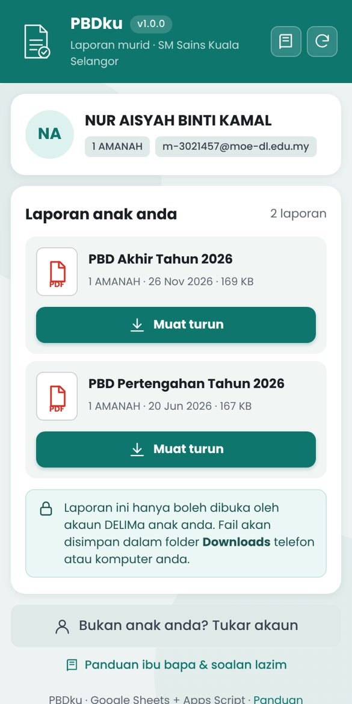
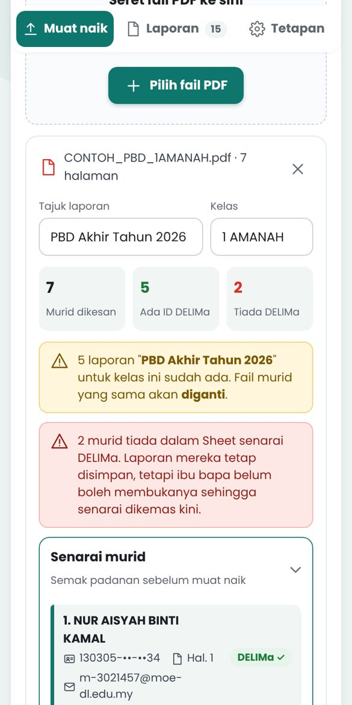
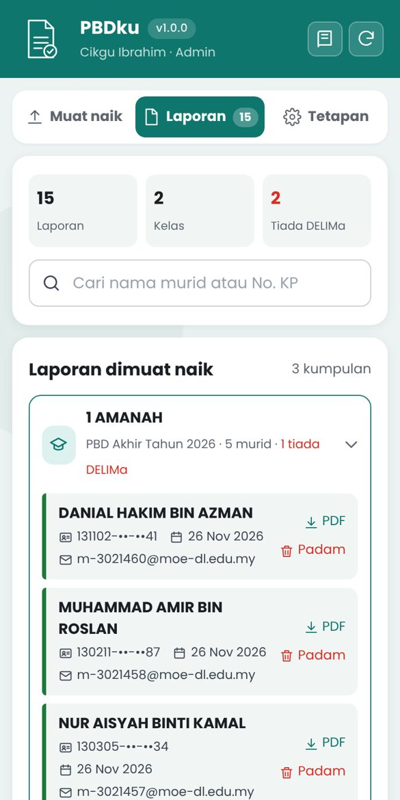
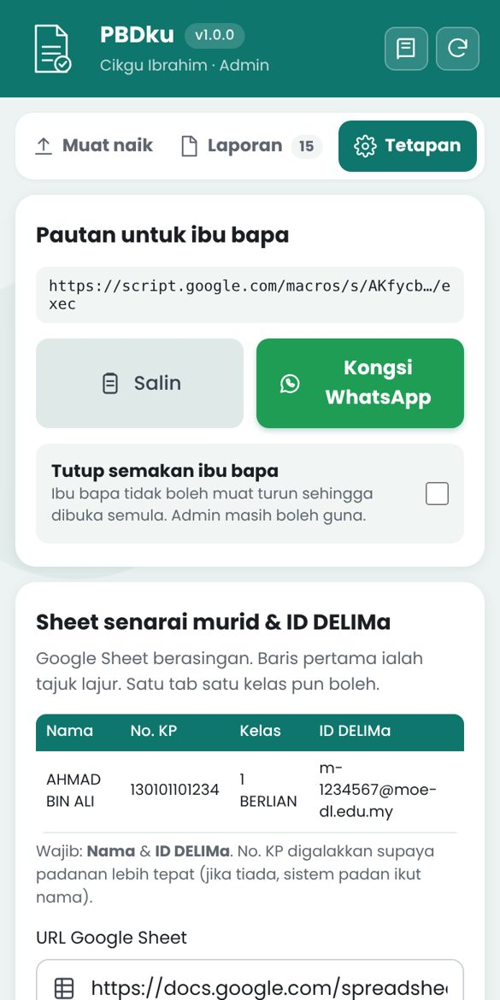

Laporan PBD murid terus ke tangan ibu bapa. Admin sekolah muat naik PDF laporan satu kelas, dan PBDku memecahkannya ikut murid secara automatik. Ibu bapa log masuk dengan akaun DELIMa anak dan hanya boleh memuat turun laporan anak sendiri. Percuma, dan semua fail kekal private dalam Google Drive sekolah.
Satu pautan untuk semua ibu bapa, satu skrin untuk admin memuat naik laporan semua kelas.
Google mengesahkan akaun DELIMa anak. Tiada kod rahsia atau kata laluan tambahan untuk diingat.
Ibu bapa hanya nampak laporan anak sendiri. Satu tekan, PDF disimpan ke telefon atau komputer.
PBD pertengahan tahun, akhir tahun dan laporan lain akan tersenarai bersama, yang terbaharu di atas.
Pilih atau seret fail PDF terus dari telefon atau komputer. Boleh beberapa fail (beberapa kelas) sekali gus.
Nama & No. KP dibaca pada setiap halaman. Laporan dua halaman bagi seorang murid pun dikumpulkan dengan betul.
Sebelum muat naik, app tunjukkan murid yang ada ID DELIMa dan yang tiada dalam senarai.
Nama & ID DELIMa murid dalam Google Sheet anda sendiri. Satu tab satu kelas pun boleh.
Satu butang menyediakan mesej lengkap dengan pautan & cara log masuk untuk group kelas.
Hentikan akses ibu bapa sementara (contohnya sebelum Hari Bertemu Guru) dengan satu suis.
Tambah Penolong Kanan atau guru data sebagai admin menggunakan emel DELIMa mereka.
Setiap log masuk dan muat turun ibu bapa direkod dalam tab Log.
Muat naik semula laporan yang sama akan menggantikan fail lama. Padam seorang murid atau satu kelas sekali gus.




Tangkapan skrin menggunakan data rekaan.
Kurang dua minit. Boleh guna telefon atau komputer.
Pautan PBDku biasanya dihantar dalam group WhatsApp kelas. Tekan pautan tersebut.
Halaman log masuk Google akan muncul. Masukkan ID DELIMa anak dan kata laluannya.
ID DELIMa murid biasanya bermula dengan m- dan berakhir dengan @moe-dl.edu.my.
Jika telefon anda sudah log masuk akaun Gmail peribadi, Google mungkin memaparkan “You need access” atau “Sorry, unable to open the file”. Ini bermakna akaun yang salah sedang digunakan.
Tekan ikon profil (bulatan di penjuru kanan atas) → Add another account / Tambah akaun → log masuk dengan akaun DELIMa anak. Atau buka pautan dalam tetingkap inkognito / peribadi.
Nama dan kelas anak akan dipaparkan bersama senarai laporan. Tekan Muat turun pada laporan yang dikehendaki.
Masalah biasa dan cara menyelesaikannya.
Tanya anak dahulu, kerana akaun ini digunakan untuk Google Classroom. Jika masih tidak tahu atau terlupa kata laluan, hubungi guru kelas atau guru ICT/penyelaras DELIMa sekolah untuk set semula kata laluan.
Anda sudah log masuk dengan akaun DELIMa, tetapi bukan akaun anak yang berdaftar (contohnya akaun adik-beradik atau akaun guru). Tekan Log masuk dengan akaun DELIMa anak dan pilih akaun yang betul. Jika pasti akaun itu betul, maklumkan kepada guru kelas supaya ID DELIMa anak dikemas kini dalam senarai sekolah.
Anda sedang menggunakan akaun Gmail peribadi. PBDku hanya dibuka untuk akaun DELIMa (@moe-dl.edu.my). Ikut langkah “Sudah log masuk akaun Gmail sendiri?” di atas.
Laporan kelas anak belum dimuat naik oleh pihak sekolah. Sila semak semula kemudian atau tanya guru kelas.
Pihak sekolah menutup akses buat sementara waktu, contohnya sebelum Hari Bertemu Guru atau selepas tempoh semakan tamat. Ikut makluman guru kelas.
Setiap anak ada akaun DELIMa sendiri. Selepas memuat turun laporan anak pertama, tekan Bukan anak anda? Tukar akaun dan log masuk dengan akaun DELIMa anak kedua.
PBDku hanya mengedarkan fail laporan yang dijana oleh sistem PBD. Sila hubungi guru kelas untuk sebarang pembetulan.
Tidak. Hanya akaun DELIMa anak anda (dan admin sekolah) boleh membuka laporan itu. Jangan kongsi kata laluan DELIMa anak dengan orang lain.
Admin ialah pemilik skrip dan sesiapa yang didaftarkan dalam Tetapan → Admin.
Baris pertama ialah tajuk lajur. Susunan lajur tidak penting. PBDku mengesan lajur ikut tajuknya.
| Nama | No. KP | Kelas | ID DELIMa |
|---|---|---|---|
| AHMAD BIN ALI | 130101101234 | 1 BERLIAN | m-1234567@moe-dl.edu.my |
| SITI BINTI OMAR | 130202141122 | 1 BERLIAN | m-1234568@moe-dl.edu.my |
m-1234567 ditulis, @moe-dl.edu.my ditambah automatik.
No. KPSangat digalakkan. Laporan dipadankan ikut No. KP. Tanpanya, padanan dibuat ikut nama (BIN/BINTI, A/L, A/P diabaikan).
KelasPilihan. Jika tiada, nama tab digunakan sebagai kelas, jadi satu tab satu kelas pun boleh.
Tab berlainanID DELIMa dan No. KP boleh berada dalam tab berasingan (cth. tab DELIMa: Nama + ID DELIMa; tab Murid: Nama + No. KP + Kelas). PBDku menggabungkannya ikut nama murid. Pastikan ejaan nama sama dalam kedua-dua tab.
Senarai ID DELIMa murid boleh diminta daripada penyelaras DELIMa sekolah.
Buka PBDku → tab Tetapan → tampal URL Sheet → Simpan & uji. App memaparkan bilangan murid yang dibaca dan contoh padanan. Sheet ini tidak perlu dikongsi dengan sesiapa. Cukup pemilik skrip ada akses.
Sheet induk sekolah dengan banyak tab? Pilih Tab ID DELIMa dan Tab No. KP dalam senarai juntai yang muncul. Tab yang lajurnya dikenali ditanda ✓. Contoh: tab eksport Google Admin DELIMa (First Name + Email Address) sebagai tab ID DELIMa, dan tab enrolmen / APDM (Nama + Kad Pengenalan) sebagai tab No. KP.
Cetak / simpan laporan PBD satu kelas sebagai satu fail PDF daripada sistem PBD (satu halaman atau lebih bagi setiap murid). PDF mesti mengandungi teks. PDF hasil imbasan (gambar) tidak dapat dibaca.
Pilih satu atau beberapa fail (satu fail satu kelas), atau seret ke kotak putus-putus di komputer. App membaca setiap halaman dalam pelayar anda.
Tajuk laporan (cth. PBD Akhir Tahun 2026) dan Kelas (cth. 1 BERLIAN) diisi automatik daripada PDF. Ubah jika perlu. Tajuk inilah yang dilihat oleh ibu bapa.
PDF dipecahkan ikut murid dan dihantar ke Google Drive satu demi satu (bar kemajuan dipaparkan). Satu kelas 35 murid mengambil masa kira-kira 1–2 minit. Jangan tutup halaman sehingga selesai. Jika ada yang gagal, tekan Muat naik sekali lagi. Hanya yang gagal akan dicuba semula.
Mesej siap (pautan app, cara log masuk & pautan panduan ini) dibuka dalam WhatsApp untuk dihantar ke group kelas atau kepada guru kelas.
Laporan dikumpulkan ikut kelas & tajuk. Cari nama atau No. KP, muat turun PDF mana-mana murid, padam seorang murid atau satu kelas sekali gus (fail dipindahkan ke Trash Drive).
Ditanda merah. Kemas kini Sheet senarai, kemudian tekan Simpan & uji dalam Tetapan supaya senarai dibaca semula.
Suis dalam Tetapan. Semasa ditutup, ibu bapa melihat mesej “Semakan laporan ditutup”. Admin masih boleh bekerja seperti biasa.
Tetapan → Admin → Tambah admin → isi emel DELIMa guru (g-…@moe-dl.edu.my) → Simpan senarai admin. Admin boleh muat naik & padam laporan semua kelas.
Tab Log dalam Sheet PBDku merekod log masuk, muat turun, padam & perubahan tetapan.
Dilakukan oleh guru ICT / admin sekolah. Ambil masa kira-kira 10 minit.
Semua langkah di bawah mesti dibuat semasa log masuk dengan akaun DELIMa guru (g-…@moe-dl.edu.my), bukan Gmail atau emel lain. Hanya akaun dalam domain yang sama dengan murid membolehkan PBDku mengenal pasti akaun DELIMa anak yang log masuk. Fail laporan akan disimpan dalam Drive akaun ini.
Di Google Drive, cipta Google Sheet baharu dan namakan PBDku. Kemudian Extensions → Apps Script.
Code.gs dengan Code.gs dari repo GitHub. Tukar NAMA_SEKOLAH di bahagian atas.Index, tampal Index.html.App, tampal App.html (kod JavaScript app).appsscript.json dari repo.Pilih fungsi pasang → Run. Google meminta kebenaran untuk Sheets, Drive dan emel. Jika muncul “Google hasn’t verified this app”, tekan Advanced → Go to PBDku (unsafe) → Allow. Amaran ini hanya untuk pemilik skrip. Ibu bapa tidak akan melihatnya.
Deploy → New deployment → ⚙ Web app:
Tekan Deploy dan salin URL …/exec. Inilah pautan untuk ibu bapa.
Buka URL tadi. Anda akan masuk sebagai admin. Dalam tab Tetapan, sambungkan Sheet senarai murid dan tambah admin lain jika perlu. Kemudian ikut bahagian Guru / admin.
Tampal kod baharu → Deploy → Manage deployments → ✏️ Edit → Version: New version → Deploy. URL kekal sama.
Laporan murid kekal dalam akaun DELIMa sekolah, bukan pada pelayan pembangun.
Dalam folder PBDku - Laporan Murid (subfolder ikut kelas) di Google Drive akaun DELIMa yang memasang app. Fail tidak dikongsi kepada sesiapa. Ibu bapa menerima salinan melalui app selepas akaun mereka disahkan.
Google mengesahkan log masuk DELIMa. PBDku membandingkan emel tersebut dengan Sheet senarai murid, kemudian hanya membenarkan laporan yang No. KP / nama sepadan dengan murid itu. Setiap permintaan muat turun disemak semula di pelayan, jadi ID fail murid lain tidak boleh digunakan.
Tidak. PDF dibaca dan dipecahkan dalam pelayar admin (pustaka pdf.js & pdf-lib), kemudian dihantar terus ke Google Apps Script sekolah. Tiada pelayan lain terlibat.
Tiada. Pembangun tidak mempunyai akses kepada Sheet, Drive atau log sekolah anda.
Kedua-duanya mengandungi nama, No. KP dan ID DELIMa murid. Kongsi hanya kepada emel admin tertentu jika perlu.
Soalan atau laporan masalah: WhatsApp 019-300 2591 atau buka isu di GitHub.